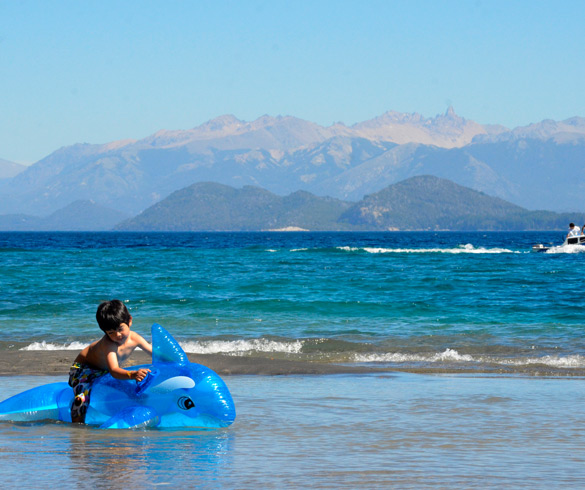
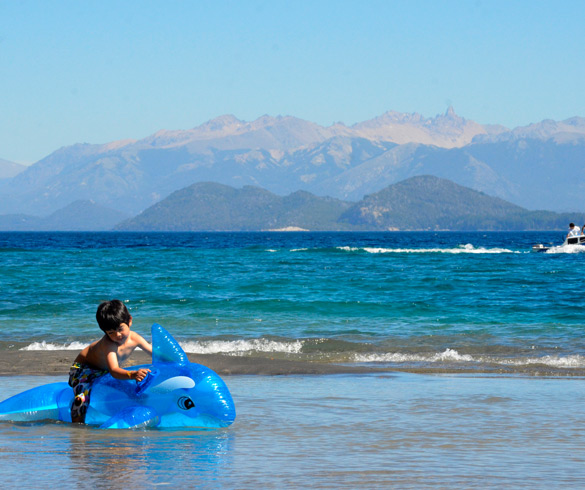
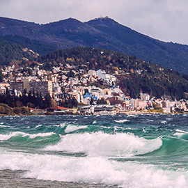
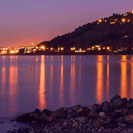
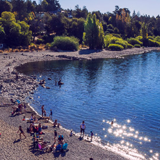

Lago Nahuel Huapi
Paisajes que te invitan a parar.
El Nahuel Huapi es un lago de origen glaciar, de allí sus aguas de intenso azul cristalino. Posee una superficie de 557 km² y se sitúa a una altitud de unos 700 metros sobre el nivel del mar. Se destaca por su profundidad y sus siete ramificaciones o brazos: Campanario, de la Tristeza, Blest, Machete, del Rincón, Última Esperanza y Huemul.
 

Su intenso color azul, sus islas y el paisaje que lo rodea, lo convierten en uno de los lugares más atractivos la Patagonia. A lo largo de su costa se pueden encontrar playas de diferentes tipos, con oferta de diversas de actividades. Te invitamos a conocerlas:
Playa del Centenario
Una de las más extensas y concurridas, ubicada en la entrada de Bariloche, a metros de la desembocadura del río Ñireco y cerca de la estación de ómnibus. Allí se practica windsurf y kitesurf, entre otros deportes.
Melipal
Se encuentra en el kilómetro 4 de la Av. Bustillo. El punto de referencia de la bajada al lago es una estación de servicio y un supermercado local. Es una playa muy pintoresca, con rocas ideales para que los chicos se diviertan trepando.
Playa Bonita
Se encuentra en el kilómetro 8 de la Av. Bustillo. Es una playa relativamente larga y de piedras pequeñas. Cuenta en sus cercanías con bares, restaurantes y kioscos. Hay prestadores de servicio para alquilar equipos y practicar buceo y kayak. Cuenta con guardavidas. Desde la costa se ven las islas Huemul, Gallina y Victoria.
Cosas a tener en consideración
- Nunca olvidar el protector solar. Se recomienda llevar agua para beber, gorro para protegerse del sol, anteojos oscuros, ojotas o un calzado que pueda mojarse, pareo, lonas o sillas de playa y para los nadadores friolentos, toallas.
- Estos lugares son una buena oportunidad para educar y dar el ejemplo a los más pequeños: no dejando basura, cuidando el lugar y respetando a la naturaleza que nos rodea.
- Atención: sólo se puede hacer fuego en los lugares permitidos.